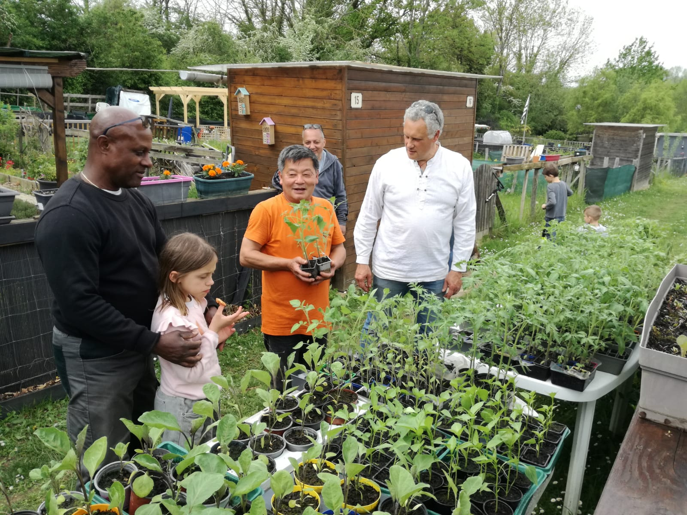

A.J.F.P
Association Des Jardins Familliaux Des Pointes
Promotion et développement de la culture des jardins familiaux à
des fins non lucratives et non commerciales, l’association promeut
l’entraide et la solidarité, la sensibilisation aux enjeux
écologiques par la préoccupation d’organiser les parcelles de
façon harmonieuse et novatrice et contribuant ainsi au bien-être
de ses membres et par extension à celui du voisinage,
l’association et/ou favorise les échanges avec diverses structures
et établissements liés directement au jardinage, à l’écologie et à
l’environnement.
Entraide, tolérance, partage, amitié:
C’est autour des ces valeurs universelles que NOUS, les
jardiniers de Thorigny, avons décidé de fondée l’A.J.F.P. en
2022